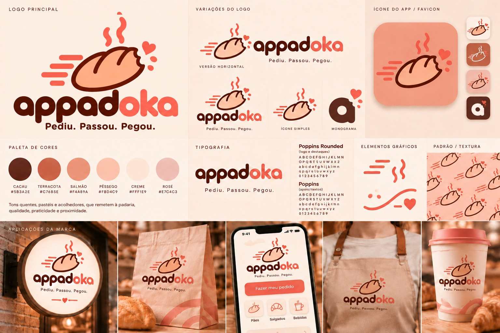

Referência v7

Recorte visual da imagem original, sem modificação do arquivo.
Referência original e SVG de estudo, sem aprovação e sem alteração no aplicativo.

Recorte visual da imagem original, sem modificação do arquivo.
Não aprovado. Nenhuma migração ao appadoka-beta. Demais elementos suspensos até aprovação do pão.